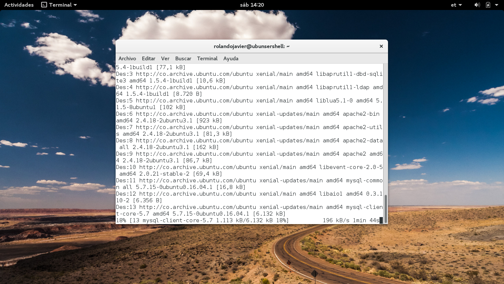
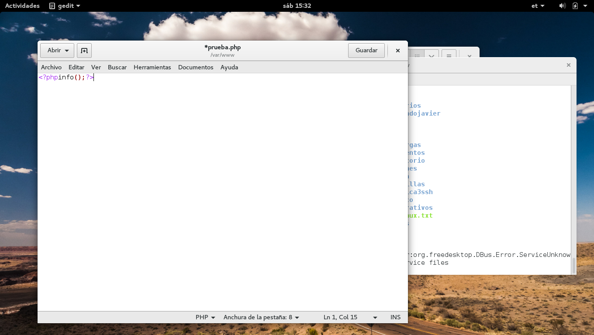
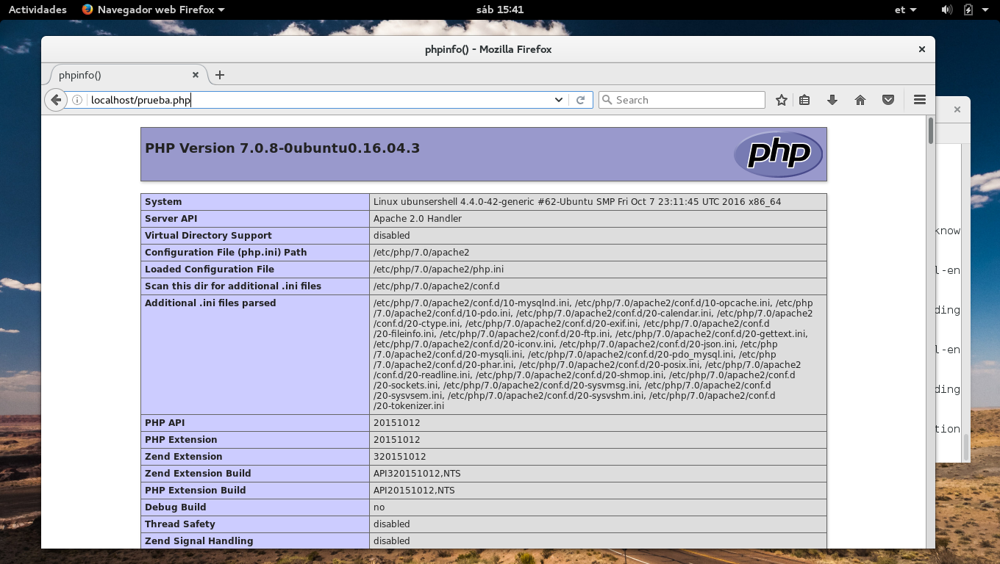
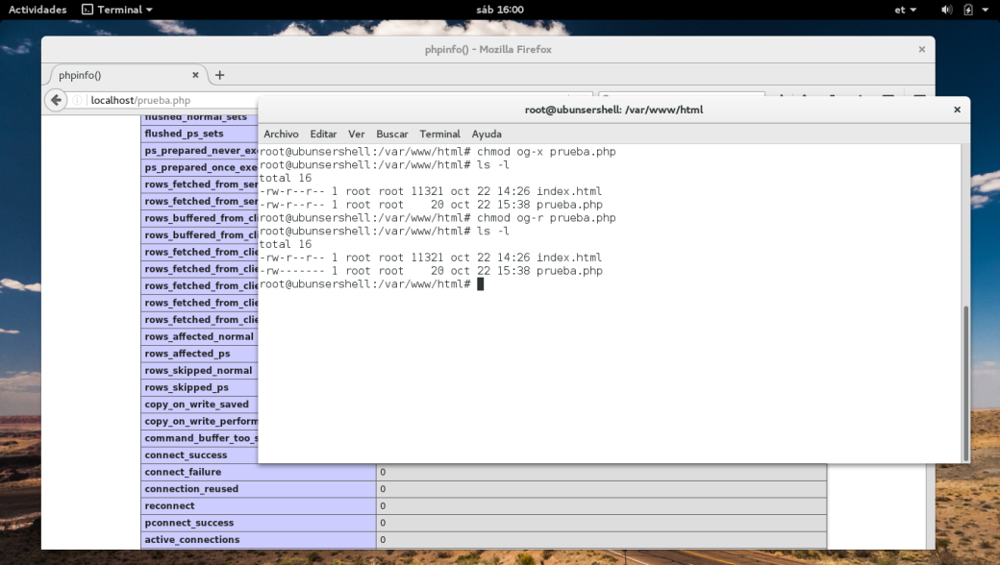
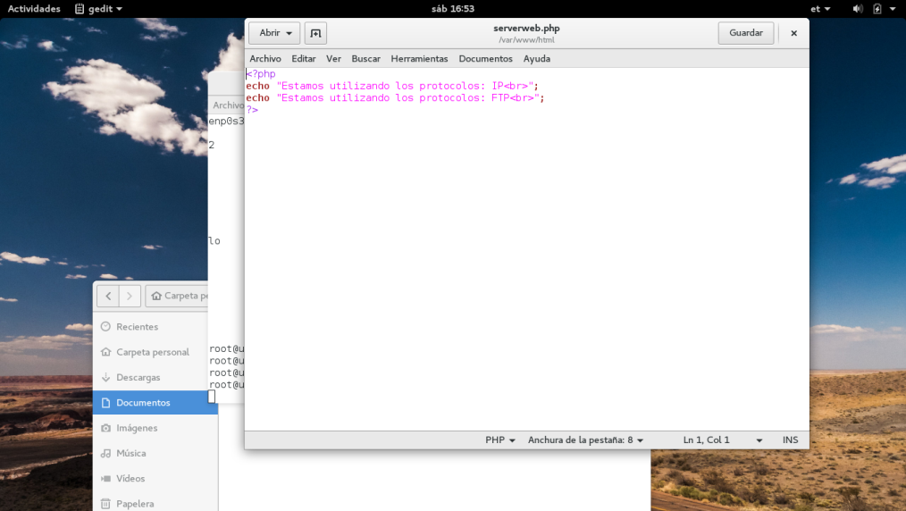
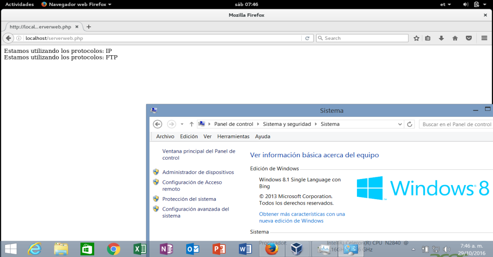
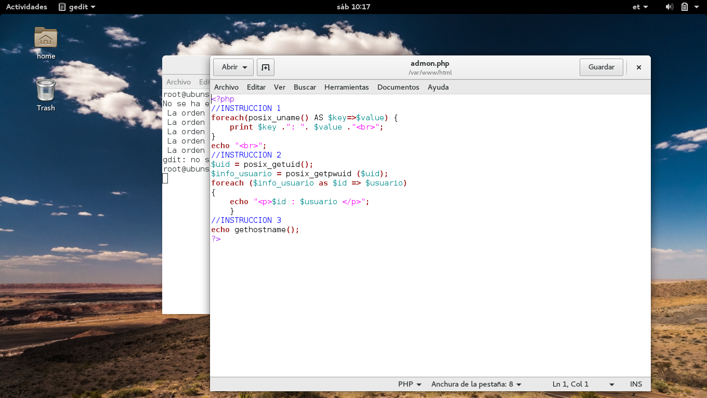
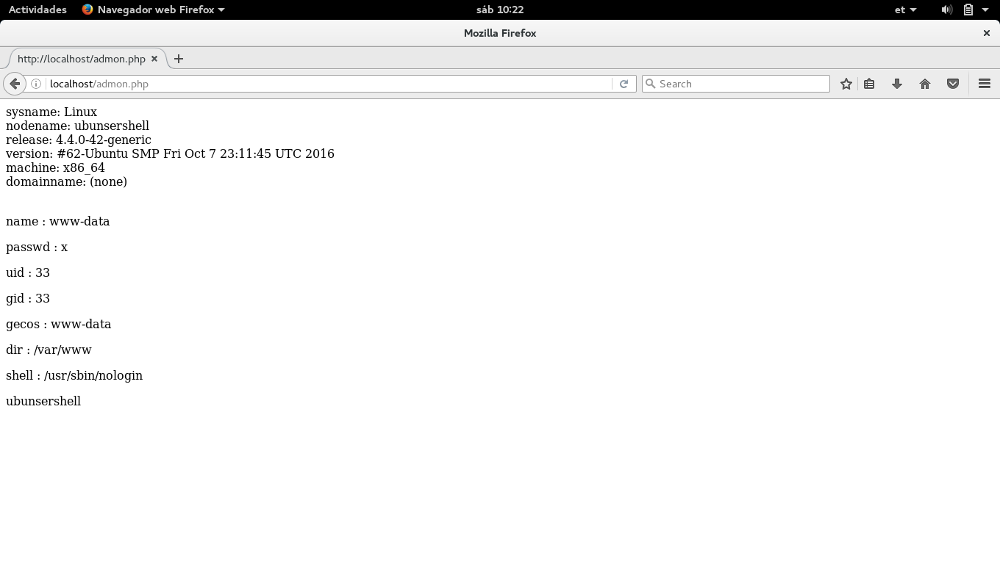

1. Realizar la Instalación de LAMP SERVER sudo apt-getinstalllamp-server^

2. Localizar servicios y paquetes instalados, ubicación de archivos en el sistema de archivos de LINUX.
3. Cree un archivo prueba.php con la siguiente con las siguientes líneas ?phpinfo(); ?>

4. Ejecute desde el browser y verifique la información sobre la instalación y propiedades de php ¿Nombre 5 elementos de configuración importantes se deben tener en cuenta y para qué sirven?

5. Restringir archivos de lectura y ejecución en el archivo prueba.php verificar desde el browser

6. Cree un archivo serverweb.php y publíquelo en su sitio indicando los servicios y protocolos de red utilizados.

7. Visualizar página web en el sistema operativo Windows de la maquina local y en el sistema operativo LINUX y WINDOWS de otra máquina.

8. Redacte el siguiente programa con el nombre de admon.php, indique su relación son el sistema operativo y describa su funcionamiento.

La instrucción posix_uname nos devuelve la información sobre sistema en el cual nos encontramos. Los valores devueltos son:
sysname - nombre del sistema operativo (p.ej. Linux)
nodename - nombre del sistema (p.ej. valiant)
release - versión de publicación del sistema operativo (p.ej. 2.2.10)
version - versión del sistema operativo (p.ej. #4 Tue Jul 20 17:01:36 MEST 1999)
machine - arquitectura del sistema (p.ej. i586)
domainname - nombre del dominio DNS (p.ej. example.com). domainname es una extensión GNU y no es parte de POSIX.1, por lo que este campo solamente está disponible en sistemas GNU o cuando se usa GNU libc.

La instrucción posix_geteuid devuelve el ID numérico de usuario del proceso actual.